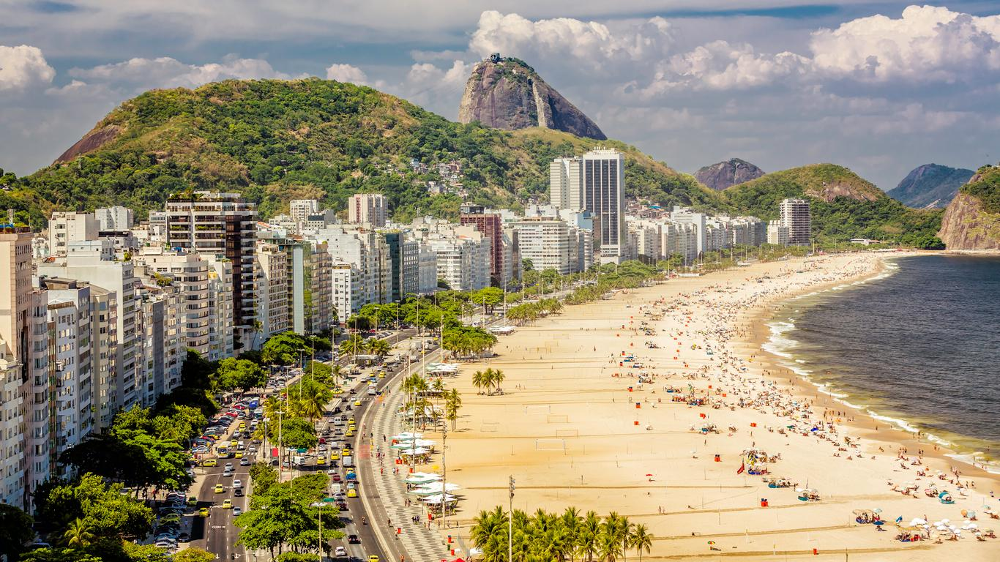
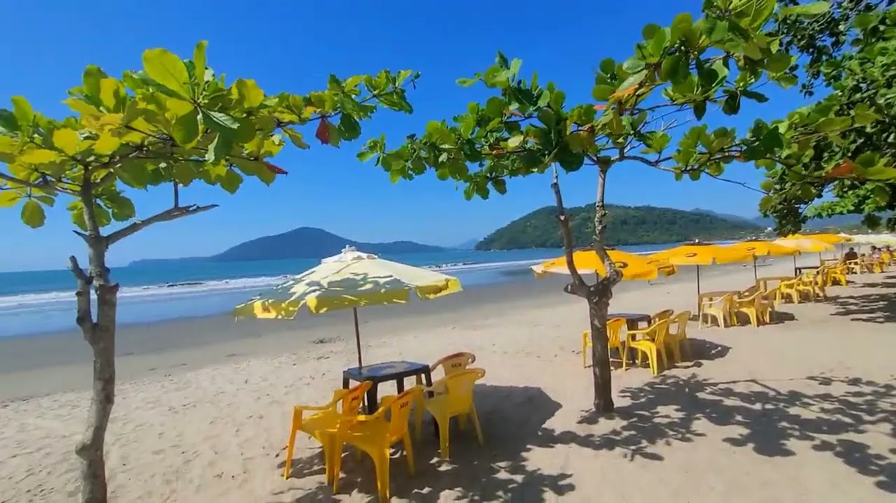
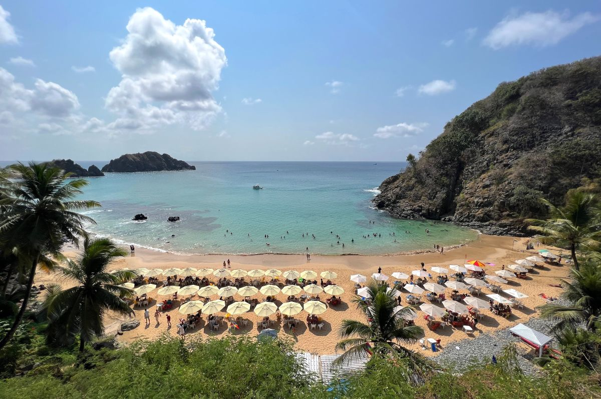
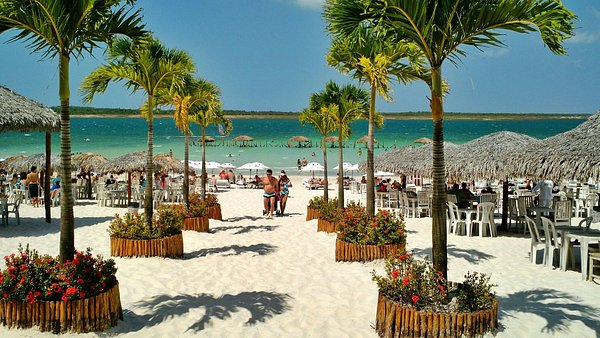

🌊Praias do Brasil🌊
Copacabana - Rio de Janeiro

Restaurantes recomendados
-
Nossa primeira recomendação é o restaurante Marius Degustare, conhecido por sua cozinha Brasileira e Mediterrânea.
-
Nossa segunda recomendação é o restaurante Fogo de Chão, conhecido pelo seu belissimo e saboroso churrasco.
-
Nossa terceira recomendação é o restaurante Joaquina, conhecido pela valorização de sabores brasileiros combinados com ingredientes artesanais e um tempero inconfundível.
O que fazer em Copacabana
-
O clássico: Você pode tomar sol, pegar um bronze, nadar ou
simplismente relaxar na areia com água de coco.
-
Forte de Copacabana: Abriga o Museu Histórico do Exército, oferece uma experiência única com vistas deslumbrantes do Pão de Açúcar e da Praia de Copacabana. Além disso, o forte conta com a Confeitaria Colombo e o Café 18 do Forte, que são ótimos para um lanche ou café com vista para o mar.
-
Feirinha de Copacabana: Uma feira noturna que acontece na Avenida Atlântica, entre as ruas Miguel Lemos e Almirante Gonçalves, no Rio de Janeiro. A feira é um local onde se pode encontrar uma variedade de produtos, desde artesanato e souvenirs até bijuterias e artigos de decoração.
Praia do Pereque Acu - Ubatuba

Restaurantes recomendados
- Nossa primeira recomendação é o restaurante Quiosque Girassol, o cardápio destaca-se por pratos com frutos do mar frescos, como camarões rosa e peixe da estação, além do famoso bolinho de arraia.
- Nossa segunda recomendação é o restaurante O Quiosque Da Mimi, com ambiente simples e mesas ao ar livre, oferece pratos da culinária brasileira, petiscos e drinks refrescantes.
- Nossa terceira recomendação é o restaurante Pizzaria São Paulo, oferece um cardápio variado com opções de pizzas tradicionais e especiais, além de massas e pratos à la carte.
O que fazer na Praia do Pereque Acu
- Caminhada até o Rio Indaiá e o Canto Esquerdo: Explore a região caminhando até o rio Indaiá, onde é possível observar a fauna local e apreciar a paisagem.
- Praticar Stand-Up Paddle ou Surfe: As águas calmas do Perequê-Açu são perfeitas para iniciantes no stand-up paddle. Além disso, o local é frequentado por surfistas, oferecendo boas ondas para a prática do surfe.
- Passeio de Caiaque ou Jangada: Alugue um caiaque ou faça um passeio de jangada para explorar a costa e as águas cristalinas ao redor da praia.
Praia do Cachorro - Fernando de Noronha

- Nossa primeira recomendação é o restaurante Bar do Cachorro, Um dos bares mais tradicionais da ilha, o Bar do Cachorro combina boa comida, música ao vivo e uma vista deslumbrante.
- Nossa segunda recomendação é o restaurante O Pico, Localizado no Terminal Turístico do Cachorro, O Pico oferece uma experiência gastronômica sofisticada com pratos como ceviches e frutos do mar.
- Nossa terceira recomendação é o restaurante Manaka Sushi, oferece uma variedade de sushis e pratos asiáticos em um ambiente moderno e acolhedor.
O que fazer na Paia do Cachorro
- o "Buraco do Galego": Na maré baixa, surge uma piscina natural escavada nas rochas — cenário excelente para fotos e saltos (água funda, cuidado ao entrar)
- Mirante & pôr do sol: Subindo até o Bar do Cachorro ou o Forte Nossa Senhora dos Remédios, você ganha vista linda da baía e do pôr do sol
- História e curiosidades locais: O nome vem de uma antiga fonte com escultura de cachorro em bronze, que ficava na entrada da praia
Porto de Galinhas - Pernambuco

- Nossa primeira recomendação é o restaurante Caldinho do Nenen - Porto de Galinhas, um dos restaurantes mais tradicionais da região. Fundado em 1985, é famoso por seu caldinho de camarão e pratos como o "Maré Alta".
- Nossa segunda recomendação é o restaurante Beijupirá, conhecido por sua cozinha nordestina contemporânea, com pratos como o "Beijumanga" e o "Peixe na Castanha"
- Nossa terceira recomendação é o restaurante La Trattoria, Para quem aprecia a culinária italiana, o La Trattoria oferece pratos tradicionais como massas artesanais e risotos, além de uma carta de vinhos selecionados.
O que fazer em Porto de Galinhas
- Passeio de Buggy: Um dos passeios mais populares, passa por todas as principais praias. Dura meio dia e os motoristas costumam ser também ótimos guias locais. Diversão garantida com paradas para banho, fotos e até jangada.
- Curtir o Centrinho de Porto de Galinhas: Repleto de lojinhas de artesanato, bares e restaurantes. Ótimo para caminhar à noite, comer uma tapioca ou comprar lembrancinhas. A famosa escultura da galinha na praça rende boas fotos.
- Passeio de Jangada no Pontal de Maracaípe: Além de ser um visual incrível do encontro do rio com o mar, você pode ver cavalos-marinhos no manguezal com guias locais. Ideal no fim da tarde para ver o pôr do sol.
Jericoacoara - Jijoca de Jericoacoara

- Nossa primeira recomendação é o restaurante Tamarindo Jeri, a cozinha é brasileira contemporânea, com foco em frutos do mar frescos. Entre os pratos mais pedidos estão o polvo grelhado com batatas e o risoto de camarão.
- Nossa segunda recomendação é o restaurante Na Casa Dela, o cardápio mistura pratos brasileiros com influências internacionais, como o camarão ao curry, moqueca de peixe e massas frescas. Os drinks também são muito elogiados.
- Nossa terceira recomendação é o restaurante Naturalmente, é muito procurado por quem busca refeições saudáveis, como crepes (doces e salgados), sucos naturais, saladas, sanduíches e o tradicional açaí.
O que fazer em Jericoacoara
- Ver o pôr do sol na Duna do Pôr do Sol: Um dos pontos altos da vila. As pessoas sobem a duna no fim da tarde para ver o sol se pôr no mar — uma das poucas praias do Brasil onde isso acontece.
- Passeio de buggy ou quadriciclo até a Lagoa do Paraíso: Água azul turquesa e redes dentro d’água. É ideal para relaxar e tirar fotos incríveis.
- Aprender kitesurf ou windsurf: Jeri é um dos melhores lugares do mundo para esportes de vento. Há várias escolas com aulas para iniciantes.